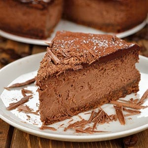

Eggnog Choc Cheescake Pls

Description
Creamy cheesecake with a slight hint of chocolate, satisfying any holiday or chocolate craving.
Equipment
- Electric mixer
- 1 9-inch round, 2 3/4-inch high spring form pan
- parchment paper
- Non-stick cooking spray
- Roastin pan
- Heavy duty aluminium foil
Ingredients
Crust
- 2 cups finely ground chocolate wafers
- 1/2 cup melted unsalted butter
- 2 tbsp packed brown sugar
Cheescake Filling
- 4 8-oz packages full fat cream cheese, at room temp
- 1 cup of granulated sugar
- 3 tbsp all purpose flour
- 4 large eggs, at room temp
- 1 cup chocolate eggnog, at room temp
- 1 1/2 tbsp of vanilla extract
- 1 tsp ground cinnamon
- 1/8 tsp ground nutmeg
Instructions
- Pre-heat oven to 325 degrees F.
- Spray spring form pan with non-stick spray, and line pan with parchment paper.
- Place 2 large pieces of aluminium foil on a flat surface underneath the pan in the form "+". Gently fold around pan, up the sides, careful as to not create any holes.
- Grease entire parchment of spring form pan with non-stick cooking spray.
- Combine crust ingredients in a medium bowl and stir until well combined. Add to spring form pan and firmly press crumbs down on bottom of pan until an even layer is created. Bake at 325 degrees F for 10 mins. Cool completely on a wire rack.
- Fill roasting pan with 1-inch of water (To prevent cracking). Place roasting pan in the oven to heat while preparing cheescake filling.
- Add cream cheese to a bowl of an electric mixer, fitted with the paddle attachment and beat on medium speed until light and fluffy, about 4 mins. Add sugar and beat 5 additional mins.
- Add flour, beat until combined. Add eggnog, vanilla, cinnamon and nutmeg, beat until blended. Add eggs, one at a time, until just combined after each addition. Pour mixture onto cooled crust. Drop pan on counter a few times to get rid of any air bubbles.
- Add cheescake to waterbath and bake at 325 degrees F for 60-70 mins or until edges are firm and center of cheesecake is still wobbly. (DON'T OPEN OVEN DOOR BEFORE 60 MINS, this can cause cracks).
- Turn off oven and crack open door. Allow cheesecake to cool in oven for 60 mins, then remove to wire rack and gently run a hot knife along the edges of the cheescake (to prevent cracking), continure to cool for 2-3 hours at room temp or until completely cooled. Cover the top of the cheesecake with foil, so that it doesn't actually touch the cheescake. Chill in refrigerator over night, but best if left for 24 hours.
- To cut fill a large glass with hot water, dip the knife in hot water before each cut. Wipe knife clean after each cut.Enjoy eggnog choc cheesecake pls... :)